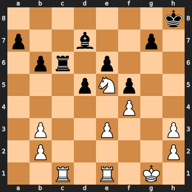

import param
import numpy as np
import pandas as pd
import panel as pn
import matplotlib.pyplot as plt
import chess
import chess.svg
from io import BytesIO
import cairosvg
import copy
from PIL import Image
from utils import get_nnue_eval_from_fen
from IPython.display import display, Markdownfen = "7k/p2b2p1/1pr1p3/3pN3/5P2/1P2P2P/1P5P/2R1R1K1 w - - 0 1"
board = chess.Board(fen)
letters = ['A','B','C','D','E','F','G','H']
def get_np_board(board):
return np.array([x.split(' ') for x in str(board).split('\n')])
def where_to_array(where_result):
return [np.array([where_result[0][i], where_result[1][i]]) for i in range(len(where_result[0]))]
def array_to_chess_pos(arr):
return letters[arr[1]] +str(8-arr[0])
def file_to_letter(file):
return letters[file]
def show_board(board):
svg = chess.svg.board(board)
img = cairosvg.svg2png(svg, scale=5.0)
img = Image.open(BytesIO(img))
plot = plt.figure(figsize=(7, 6))
ax = plot.add_subplot(111)
ax1_plot = ax.imshow(img)
ax.set_xticks([])
ax.set_yticks([])
plt.show()
def pos_idx_to_chess_pos(idx):
rank = 7 - ((63-idx) // 8)
file = (idx % 8)
return letters[file] +str(rank + 1)
chess_symbol_to_name = {
'r': 'rook',
'q': 'queen',
'n': 'knight',
'p': 'pawn',
'b': 'bishop',
'k': 'king'
}
Connected Rooks
def get_connected_rooks(board, color = 'white'):
rook_symbol = 'R' if color == 'white' else 'r'
np_board = get_np_board(board)
rooks = np.where(np_board == rook_symbol)
if len(rooks[0]) > 1: # more than one rook
if (rooks[0][0] == rooks[0][1]) | (rooks[1][0] == rooks[1][1]): # same file
rook_line = np_board[min(rooks[0]):(max(rooks[0])+1), min(rooks[1]):(max(rooks[1])+1)]
concept_activated = ((rook_line == '.') | (rook_line == rook_symbol)).all()
if concept_activated:
rook_positions = where_to_array(rooks)
description = f'{color} has connected rooks on {array_to_chess_pos(rook_positions[0])} and {array_to_chess_pos(rook_positions[1])}'
return {'concept_activated': concept_activated,
'description': description,
'color': color,
'concept_name': 'connected_rooks'}
return {'concept_activated' : False,
'color': color,
'concept_name': 'connected_rooks'}
get_connected_rooks(board){'concept_activated': True,
'description': 'white has connected rooks on C1 and E1',
'color': 'white',
'concept_name': 'connected_rooks'}Doubled Pawns
def get_doubled_pawns(board, color = 'white'):
np_board = get_np_board(board)
pawn_symbol = 'P' if color == 'white' else 'p'
doubled_pawn_cols = np.where((np_board == pawn_symbol).sum(axis = 0) > 1)[0]
if len(doubled_pawn_cols) > 0:
description = f"{color} has doubled pawns on files {' and '.join([file_to_letter(x) for x in doubled_pawn_cols])}"
return {'concept_activated': True,
'description': description,
'color': color,
'concept_name': 'doubled_pawns'}
return {'concept_activated' : False,
'color': color,
'concept_name': 'doubled_pawns'}
get_doubled_pawns(board, color = 'white'){'concept_activated': True,
'description': 'white has doubled pawns on files B and H',
'color': 'white',
'concept_name': 'doubled_pawns'}Isolated pawn
# Isolated Pawns
def get_isolated_pawns(board, color = 'white'):
np_board = get_np_board(board)
pawn_symbol = 'P' if color == 'white' else 'p'
pos_any_pawn = ((np_board == pawn_symbol).sum(axis=0) > 0)
isolated_pawns = np.where(pos_any_pawn & ~np.roll(pos_any_pawn, 1) & ~np.roll(pos_any_pawn, -1))[0]
if len(isolated_pawns) > 0:
description = f"{color} has isolated pawns on file(s) {' and '.join([file_to_letter(x) for x in isolated_pawns])}"
return {'concept_activated': True,
'description': description,
'color': color,
'concept_name': 'isolated_pawns'}
return {'concept_activated' : False,
'color': color,
'concept_name': 'isolated_pawns'}
get_isolated_pawns(board, color = 'white'){'concept_activated': True,
'description': 'white has isolated pawns on file(s) B and H',
'color': 'white',
'concept_name': 'isolated_pawns'}Open Files
def has_control_of_open_file(board, color = 'white'):
# Open Files
np_board = get_np_board(board)
rook_symbol = 'R' if color == 'white' else 'r'
queen_symbol = 'Q' if color == 'white' else 'q'
rook_symbol_opponent = 'r' if color == 'white' else 'R'
queen_symbol_opponent = 'q' if color == 'white' else 'Q'
no_pawns = (((np_board == 'p') | (np_board == 'P')).sum(axis=0) == 0)
rook_or_queen_player = ((np_board == rook_symbol) | (np_board == queen_symbol)).any(axis=0)
rook_or_queen_opponent = ((np_board == rook_symbol_opponent) | (np_board == queen_symbol_opponent)).any(axis=0)
control_files = np.where(no_pawns & ~rook_or_queen_opponent & rook_or_queen_player)[0]
if len(control_files) > 0:
description = f"{color} has control of file(s) {' and '.join([file_to_letter(x) for x in control_files])}"
return {'concept_activated': True,
'description': description,
'color': color,
'concept_name': 'control_of_open_file'}
return {'concept_activated' : False,
'color': color,
'concept_name': 'control_of_open_file'}
def has_contested_open_file(board):
# Open Files
color = 'white'
np_board = get_np_board(board)
rook_symbol = 'R' if color == 'white' else 'r'
queen_symbol = 'Q' if color == 'white' else 'q'
rook_symbol_opponent = 'r' if color == 'white' else 'R'
queen_symbol_opponent = 'q' if color == 'white' else 'Q'
no_pawns = (((np_board == 'p') | (np_board == 'P')).sum(axis=0) == 0)
rook_or_queen_player = ((np_board == rook_symbol) | (np_board == queen_symbol)).any(axis=0)
rook_or_queen_opponent = ((np_board == rook_symbol_opponent) | (np_board == queen_symbol_opponent)).any(axis=0)
control_files = np.where(no_pawns & rook_or_queen_opponent & rook_or_queen_player)[0]
if len(control_files) > 0:
description = f"contested open file on file(s) {' and '.join([file_to_letter(x) for x in control_files])}"
return {'concept_activated': True,
'description': description,
'color': 'both',
'concept_name': 'contested_open_file'}
return {'concept_activated' : False,
'color': 'both',
'concept_name': 'contested_open_file'}
display(has_control_of_open_file(board, color = 'white'))
display(has_contested_open_file(board)){'concept_activated': False,
'color': 'white',
'concept_name': 'control_of_open_file'}{'concept_activated': True,
'description': 'contested open file on file(s) C',
'color': 'both',
'concept_name': 'contested_open_file'}Forking
def is_knight_forking(board, color='white'):
high_value_pieces_white = ['K','Q','R', 'B']
high_value_pieces_black = ['k','q','r', 'b']
if color == 'white':
high_value_pieces = high_value_pieces_black
else:
high_value_pieces = high_value_pieces_white
piece_map = board.piece_map()
knight_string = 'N' if color == 'white' else 'n'
knight_positions = [d[0] for d in piece_map.items() if str(d[1]) == knight_string]
if len(knight_positions) > 0:
forks = []
attacks = []
for kn_pos in knight_positions:
attacking = []
if not board.is_pinned(board.turn, kn_pos):
for square in board.attacks(kn_pos):
piece = board.piece_at(square)
if str(piece) in high_value_pieces:
attacking.append([piece, square])
if len(attacking) > 1:
attacks.append((kn_pos, attacking))
if len(attacks) > 0:
description = ' and '.join([f"{color} knight on {pos_idx_to_chess_pos(x[0])} is forking {chess_symbol_to_name[str(x[1][0][0])]} on {pos_idx_to_chess_pos(x[1][0][1])} and {chess_symbol_to_name[str(x[1][1][0])]} on {pos_idx_to_chess_pos(x[1][1][1])}" for x in attacks])
return {'concept_activated': True,
'description': description,
'color': color,
'concept_name': 'is_forking'}
return {'concept_activated' : False,
'color': color,
'concept_name': 'is_forking'}
is_knight_forking(board){'concept_activated': True,
'description': 'white knight on E5 is forking rook on C6 and bishop on D7',
'color': 'white',
'concept_name': 'is_forking'}Checking
def can_check(board):
color = 'white' if board.turn else 'black'
check_moves = []
for move in board.legal_moves:
board_ = copy.copy(board)
if board_.gives_check(move):
check_moves.append(move)
if len(check_moves) > 0:
description = f"{color} has checking move(s) {' and '.join([str(x) for x in check_moves])}"
return {'concept_activated': True,
'description': description,
'color': color,
'concept_name': 'is_checking'}
return {'concept_activated' : False,
'color': color,
'concept_name': 'is_checking'}
can_check(board){'concept_activated': True,
'description': 'white has checking move(s) e5f7 and e5g6',
'color': 'white',
'concept_name': 'is_checking'}results = get_nnue_eval_from_fen(board.fen())
results['table'][['MG_total','EG_total']].to_dict(){'MG_total': {'Material': '6.10',
'Imbalance': '0.07',
'Pawns': '-0.66',
'Knights': '0.21',
'Bishops': '0.26',
'Rooks': '0.00',
'Queens': '0.00',
'Mobility': '0.16',
'King_safety': '0.89',
'Threats': '0.00',
'Passed': '0.00',
'Space': '0.00',
'Winnable': '0.00',
'Total': '7.03'},
'EG_total': {'Material': '6.59',
'Imbalance': '-0.03',
'Pawns': '-1.06',
'Knights': '0.02',
'Bishops': '0.54',
'Rooks': '0.00',
'Queens': '0.00',
'Mobility': '0.66',
'King_safety': '0.28',
'Threats': '0.00',
'Passed': '0.00',
'Space': '0.00',
'Winnable': '0.00',
'Total': '7.00'}}board
Visualization
def eval_board(board, print_board = False, print_stockfish = False, print_concepts = False):
results = get_nnue_eval_from_fen(board.fen())
if print_stockfish:
display(Markdown(f"## Stockfish evaluation:"))
display(Markdown(f"### NNUE: {results['eval']['NNUE']}"))
display(Markdown(f"### Classical: {results['eval']['Classical']}"))
if print_board:
show_board(board)
color_concepts = [get_doubled_pawns,
get_connected_rooks,
get_isolated_pawns,
has_control_of_open_file,
is_knight_forking,
]
global_concepts = [has_contested_open_file,
can_check]
concept_results = []
for concept in color_concepts:
white_result = concept(board, color = 'white')
black_result = concept(board, color = 'black')
concept_results.append(white_result)
concept_results.append(black_result)
if print_concepts:
if white_result['concept_activated'] == True:
display(Markdown('#### '+ white_result['description']))
if black_result['concept_activated'] == True:
display(Markdown('#### '+ black_result['description']))
for concept in global_concepts:
result = concept(board)
concept_results.append(result)
if print_concepts:
if result['concept_activated'] == True:
display(Markdown('#### '+ result['description']))
return {'concept_results': concept_results, 'stockfish_results': results['table'][['MG_total','EG_total']].to_dict()}
result = eval_board(board, print_board=True, print_stockfish=True, print_concepts=True)Stockfish evaluation:
NNUE: +8.43
Classical: +7.00

white has doubled pawns on files B and H
white has connected rooks on C1 and E1
white has isolated pawns on files B and H
white knight on E5 is forking rook on C6 and bishop on D7
contested open file on file(s) C
white has checking move(s) e5f7 and e5g6
def eval_board(board, print_board = False, print_stockfish = False, print_concepts = False):
f, (ax1, ax2) = plt.subplots(1, 2, figsize = (14,7))
if print_board:
svg = chess.svg.board(board)
img = cairosvg.svg2png(svg, scale=5.0)
img = Image.open(BytesIO(img))
ax1_plot = ax1.imshow(img)
ax1.set_xticks([])
ax1.set_yticks([])
print_results = []
results = get_nnue_eval_from_fen(board.fen())
if print_stockfish:
print_results.append(f"NNUE: {results['eval']['NNUE']}")
print_results.append(f"Classical: {results['eval']['Classical']}")
color_concepts = [get_doubled_pawns,
get_connected_rooks,
get_isolated_pawns,
has_control_of_open_file,
is_knight_forking,
]
global_concepts = [has_contested_open_file,
can_check]
concept_results = []
for concept in color_concepts:
white_result = concept(board, color = 'white')
black_result = concept(board, color = 'black')
concept_results.append(white_result)
concept_results.append(black_result)
if print_concepts:
if white_result['concept_activated'] == True:
print_results.append(white_result['description'])
if black_result['concept_activated'] == True:
print_results.append(black_result['description'])
for concept in global_concepts:
result = concept(board)
concept_results.append(result)
if print_concepts:
if result['concept_activated'] == True:
print_results.append(result['description'])
ax2.text(0.05,0.95,'\n'.join(print_results), ha='left', va = 'top', fontsize=10, wrap=True)
ax2.set_xticks([])
ax2.set_yticks([])
return {'concept_results': concept_results, 'stockfish_results': results['table'][['MG_total','EG_total']].to_dict()}
result = eval_board(board, print_board=True, print_stockfish=True, print_concepts=True)
result['concept_results'][{'concept_activated': True,
'description': 'white has doubled pawns on files B and H',
'color': 'white',
'concept_name': 'doubled_pawns'},
{'concept_activated': False,
'color': 'black',
'concept_name': 'doubled_pawns'},
{'concept_activated': False,
'color': 'white',
'concept_name': 'connected_rooks'},
{'concept_activated': False,
'color': 'black',
'concept_name': 'connected_rooks'},
{'concept_activated': True,
'description': 'white has isolated pawns on files B and H',
'color': 'white',
'concept_name': 'isolated_pawns'},
{'concept_activated': False,
'color': 'black',
'concept_name': 'isolated_pawns'},
{'concept_activated': True,
'description': 'white has control of file(s) C',
'color': 'white',
'concept_name': 'control_of_open_file'},
{'concept_activated': False,
'color': 'black',
'concept_name': 'control_of_open_file'},
{'concept_activated': False, 'color': 'white', 'concept_name': 'is_forking'},
{'concept_activated': False, 'color': 'black', 'concept_name': 'is_forking'},
{'concept_activated': False,
'color': 'both',
'concept_name': 'contested_open_file'},
{'concept_activated': False, 'color': 'black', 'concept_name': 'is_checking'}]from utils import stockfish_eval, get_config
config = get_config()
parameters = None
stockfish = stockfish_eval(path=config["STOCKFISH_PATH"], parameters=parameters)
stockfish.set_fen_position(fen)
pv_results = []
pv_results.append(eval_board(board, print_board=True, print_stockfish=True, print_concepts=True))
for i in range(3):
stockfish.set_fen_position(board.fen())
board.push(chess.Move.from_uci(stockfish.get_best_move()))
pv_results.append(eval_board(board, print_board=True, print_stockfish=True, print_concepts=True))
#display(board)


boardstockfish._is_ready()stockfish.get_parameters(){'Write Debug Log': 'false',
'Contempt': 0,
'Min Split Depth': 0,
'Threads': 1,
'Ponder': 'false',
'Hash': 16,
'MultiPV': 1,
'Skill Level': 20,
'Move Overhead': 30,
'Minimum Thinking Time': 20,
'Slow Mover': 80,
'UCI_Chess960': 'false',
'UCI_LimitStrength': 'false',
'UCI_Elo': 1350,
'UCI_ShowWDL': 'false'}stockfish.set_fen_position(fen)Visualize concepts across time
board = chess.Board(fen)
pv_results = []
pv_results.append(eval_board(board))
for i in range(10):
stockfish.set_fen_position(board.fen())
board.push(chess.Move.from_uci(stockfish.get_best_move()))
pv_results.append(eval_board(board))
#display(board)vis_stockfish_concepts = ['King_safety', 'Material', 'Mobility']
vis_custom_concepts = ['isolated_pawns','doubled_pawns','control_of_open_file']
vis = []
for pos_result in pv_results:
pos_dict = {}
for concept in vis_stockfish_concepts:
pos_dict[concept] = pos_result['stockfish_results']['MG_total'][concept]
#for concept in vis_custom_concepts:
# res = next(item for item in pos_result['concept_results'] if (item["concept_name"] == concept) & (item["color"] == "white"))
# pos_dict[concept] = res['concept_activated']
vis.append(pos_dict)
pd.DataFrame(vis).astype(float).plot()<AxesSubplot:>
result['concept_results'][{'concept_activated': True,
'description': 'white has doubled pawns on files B and H',
'color': 'white',
'concept_name': 'doubled_pawns'},
{'concept_activated': False,
'color': 'black',
'concept_name': 'doubled_pawns'},
{'concept_activated': False,
'color': 'white',
'concept_name': 'connected_rooks'},
{'concept_activated': False,
'color': 'black',
'concept_name': 'connected_rooks'},
{'concept_activated': True,
'description': 'white has isolated pawns on files B and H',
'color': 'white',
'concept_name': 'isolated_pawns'},
{'concept_activated': False,
'color': 'black',
'concept_name': 'isolated_pawns'},
{'concept_activated': True,
'description': 'white has control of file(s) C',
'color': 'white',
'concept_name': 'control_of_open_file'},
{'concept_activated': False,
'color': 'black',
'concept_name': 'control_of_open_file'},
{'concept_activated': False, 'color': 'white', 'concept_name': 'is_forking'},
{'concept_activated': False, 'color': 'black', 'concept_name': 'is_forking'},
{'concept_activated': False,
'color': 'both',
'concept_name': 'contested_open_file'},
{'concept_activated': False, 'color': 'black', 'concept_name': 'is_checking'}]